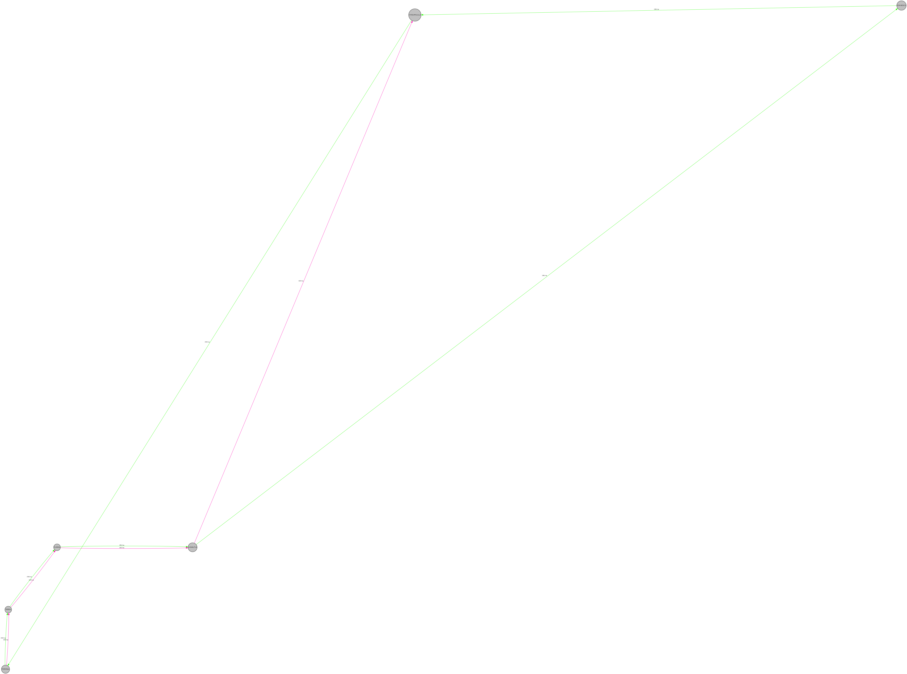

Tickets
{{countstd}}
Standard
{{countprm}}
Premium
{{countfll}}
Full
{{countnls}}
Endless
Mapa general
Rutas disponibles
| {{ruta.nombre}} | {{ruta.tiempo}} mins | |
| {{ruta.nombre}} | {{ruta.tiempo}} mins | |
| {{ruta.nombre}} | {{ruta.tiempo}} mins | |
| {{ruta.nombre}} | {{ruta.tiempo}} mins |
Comentarios
Pablo Andres Hernandez Rivera Mayo, 19 2018, 23:59 PM
Excelente servicio! Toda la aplicacion funciona perfectamente, estoy satisfecho totalmente y felicito de corazon a quien haya desarrollado tan maravillosa aplicacion. El acceso es inmediato, y todos sus errores (si es que los hay) son perdonables.
José Veliz (CiberVeliz) Mayo 22, 2018, 3:15 AM
Estoy muy satisfecho con las facilidades que proporciona esta appWeb para el uso del trasporte público, sin duda es una idea revolucionaria que nos ayuda como país y ayuda a que habilidades y capacidades salgan a flote con la creación e implementacion de proyectos como este. Arriba Guate!